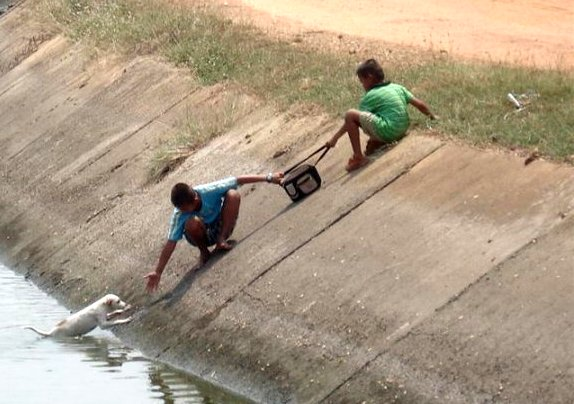

Kaynak kod deposu kullanın, kullandırın
Üniversitede yapılan projeler genelde uzun soluklu değil. Çoğu, not almak için yapılan ödevlerden ibaret. Akademik projelerde ise bütünlüklü bir proje çıkaran çok çok az grup var. Görünen o ki adı grup olmasına rağmen herkes tek başına takılıyor; yaptıklarını bir rapora çevirip ya dersin hocasına, ya da bir makaleye sunuyor. Durum böyle olunca da şeffaflık gerçekten büyük bir problem oluyor.
Bundan iki sene önce Almanya'ya değişim için gittiğimde ilk dikkatimi çeken şey birlikte çalışabilmeleri ve açık olmaları idi. Bir-iki gün içinde bana bir svn hesabı açıp şifre verdiler. Birlikte çalışacağımız arkadaş ile bir proje oluşturup oraya yükledik. Viki için de hesap açtılar, baktım ki içi bir hayli dolu. Kim ne zaman tatile çıkıyor, kim ne zaman orada olacak, neyden sorumlu, neler yaptı, vb. her şey açıkta. Benim inatla yeşertmeye çalıştığım şeyleri böyle görüverince şaşırıp kalmıştım. Sonradan gittiğim iyi yerlerde hep bunu gördüm. Küçük çaplı da olsa ben de uygulamaya çalıştım. Örneğin lisans öğrencilerinin proje danışmanlığını yaparken hemen bir kod deposu açtık ve işlerin nasıl ilerlediğini oradan takip ettim. Daha sonra da öğrencilerin kayıtlı oldukları asıl hocalarına öğrencinin performansı hakkında değerlendirme yaparken bu verileri kullandım. Örneğin Yunus ile yaptığımız sıradan haftalık toplantımızda kodu svn'den çekip kendi bilgisayarımda denedim. Neler yapılacağını kararlaştırdık ve madde madde girdik. Bu yöntemi nasıl geliştirebileceğimizi de süreç içinde hep konuştuk. Sonradan projeyi Yunus'un ve benim yoğunluğumuzdan dolayı bitirdik ama olduğu kadarıyla bile çok sağlıklı ilerledi ve sıfırdan başladığımız projeyi bir hayli geliştirerek SİU'da demosunu yaptık. Benzer yöntemi Onur'la da denedik ve onu da sunduk. Her iki durumda da baştan zor gelse de süreçten hem ben hem onlar gayet memnun kaldık. Her hafta ne kadar ilerleme kaydedildi görebildim ve ona göre daha somut konuştuk. Gerektiğinde ben de kodlamaya katıldım. Tuttuğumuz yöntem hem Yunus'la hem de Onur'la şahane işledi çünkü yaptıklarının ortada olmasından korkmuyorlardı, çalışkan insanlardı. Başka bir öğrenciyle bu işe giriştiğimizde tam bir hüsrana uğradık. Bir dönem boyunca depoya bir satır bile kod yüklemedi! Tabii ben de hocaya bunu gösterdim ve dersten kaldı, ya da hocanın yumuşak yürekliliği ile ek bir rapor hazırlayıp DD ile de olsa geçti. Tek kişilik olmayan projelerde daha anlamlı olan bu yöntemi yazılım mühendisliğine giriş dersi öğrencilerine danışmanlık yaptığımda da denedim. Baştan söyledim herkes kendi kullanıcı adı ile girsin kodlarını diye. Kimin rapora ne derece katkıda bulunduğunu, kimin tasarımla uğraştığını, vd. gördüm ve ona göre bir toplantı yapıp projenin değerlendirmesini yaptık. Değerlendirmeyi de açık yapmaya çalıştık.
Neyse ki bu yöntemler daha da yaygınlaştı ve artık projelerinde svn, mercurial, git türevlerinden birini kullanmayana garip bakıyorlar. Katıldığım projelerde çoğu kişi buna hazır geliyor. Ama yine de inatla ayak diretenler oluyor. Önceden bunun üstünde pek düşünmezdim. Artık konunun daha sarih olduğunu düşünüyorum. Her şeyin gizli kapalı yapılmasına alışmış memleketim insanının daha güzel projeler yapabilmesi için ise bu konuyu özellikle önemli görüyorum.
Katıldığınız projelerde kaynak kod deposu kullanın, kullandırın! Böylelikle kimin ne kadar çalıştığı ortaya çıksın. Daha doğrusu kimlerin çalışmayıp ama çalışıyormuş gibi görünüp derslerden beleşe geçtiği, adını boş yere yayınlara yazdırdığı bilinsin. Arkadaşınızın kodunu tekrarlayarak aynı sonuçları alabilin ve gerçekten bilim yaptığınızı hissedin. Çalışmayan ama lafta (ve maalesef çoğu kişinin yayınında) dünyaları deviren çalışmalara tamah etmeyin.
Yazının üslubu okura biraz sert gelmiş olabilir, affola. Yıllardır türlü ödev veya projede birçok insanla birlikte çalıştım ve sadece laf yaparak kazanım elde edilmesinden -bunu pek dile getirmesem ve buna rağmen o grupta çalışsam da- hiç hoşlaşmadım, hoşlaşmayacağım da. Lütfen kendinizi de etrafınızdakileri de işinde daha şeffaf olmaya teşvik edin. Bunu yaptığınızda etrafınızda lafla peynir gemisi yürüten ne de çok insan olduğunu göreceksiniz. Paylaşım ve açıklığın getirdiği bir güzellik daha var ki o da aslında pek de iyi olmadığınızı, sizden çok daha iyi işler yapan, iyi kod yazan, iyi rapor hazırlayan insanlar olduğunu göreceksiniz ama sakın bu sizi yıldırmasın, geliştirsin.
Şeffaflıktan samimiyet ve birlik, birlikten de kuvvet doğar. Bu kuvvetle de tek başımıza çözemeyeceğimiz nice problemleri çözebiliriz.



4 yorum
Redmine'a da kesinlikle goz atin. Webfaction uzerinde kendi kullandigim svn hesaplari ve bir redmine kurdum, gayet kullanisli ve de daha once kendim ugrasarak yaptigim sunucudan cok daha guvenli oldu - ki saldiriya ugramisti onceki (guvenlikten sinifta kaldim :) ). https://code.tarikzengin.com/
Rails ile ilgili bazi sorunlarim var ama idare ediyorum.
Git ve bazaar bana biraz karisik gozukuyor. Svn biraz daha kolayima geliyor. Cakismalar konusunda pek basarili degil ama genelde cok kisi olmuyor paralel calisan benim kullandigim durumlarda. Labdakilere pek benimsetemedim. Hala eski model son, sonn, en_son, sonsonson seklinde gidiyorlar.
Lab disindan arkadaslari da devamli ayartmaya calisiyorum, beraber biseyler yapalim diye ama yanasan olmadi simdiye kadar :) Ciddi manada birseylere baslayabilmek gercekten istiyorum. Proje yonetimi ve acik kaynak kodlu gelistirme konusunda epey eksik ve soru isareti var kafamda.
Redmine derli toplu olması grup için ile daha uygunmuş. Sitesine baktım şimdi, demosu da var: http://demo.redmine.org/
Senin sitede de demoda da Türkçe çıktı sayfalar, çevirisi de varmış demek ki, çok güzelmiş.
Şu sonn, sonson yazma işi şahane. Hala öyle yapan arkadaşlarım var maalesef. Bir de ben size hangi sonu yollamıştım diyorlar :)
Aynı kaygılar bende de var. İşe girişmeyince insan eksik kalıyor, bir şey de öğrenemiyor. Özellikle akademide bu konuda çok gerideyiz. Yönetici konumundaki hocalarımız bu konulara çok uzaklar, öğrenciler de otonom olarak bir araya gelemiyorlar. Bunun değerini henüz anlayabilmiş değiliz.
Koc Universitesinde de svn sistemi kurdular. Sadece hocamle ben kullaniyorum su an itibariyle. Ortak is yapmak icin kesinlikle olmazsa olmaz. Universitelerin kendi sistemleri de olmali guvenlik acisindan.
Nasıl yani, üniversiteye mi kurdular? Üniversite öğrencilerinin e-posta adresi alabilmesi gibi mi oldu?